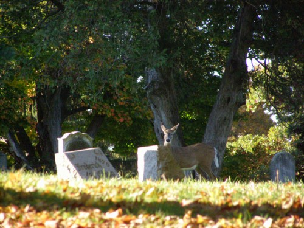

|
Oakwood Cemetery Troy, New York |
|
Oakwood Cemetery is located at 50 101st Street in Troy, New York (Rensselaer County). The coordinates are 42° 45' 50" N, 73° 39' 59" W.
 Oakwood Cemetery is also supposedly haunted. There have been reports of an apparition that walks around the area near Uncle Sam's gravestone. Others have seen glowing lights and shadows, and some have even heard screams from the cemetery at night. For more information about the cemetery, please visit the official website. Many thanks to Dee for taking me to this cemetery!
|